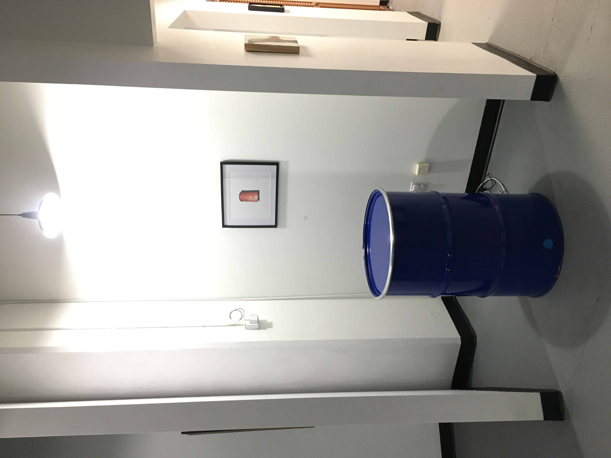
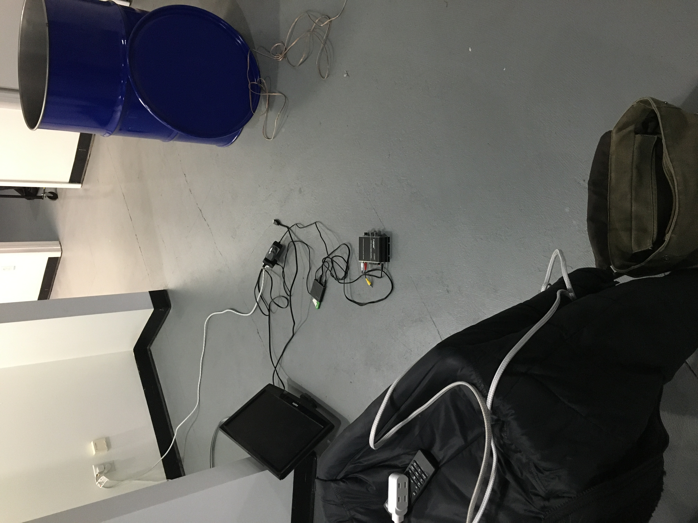

Traces of Displacement, Great Arrow Art Gallery, 2023
This installation leveraged its location, the acoustics of the space, and the natural curiosity of participants, inviting them to explore what it was and how they might engage with it.
Traces of Displacement centered around a single oil drum connected to a transducer, which reverberated the voices of Indigenous people from the Niger Delta alongside sounds from both natural and industrial environments—water, wind, and an oil pump jack.
Together, these elements told a deeply personal yet globally resonant story of ecological devastation and forced migration.
Stripped of the bells and whistles that often accompany my work, this was a pared-down version of my previous projects—raw, direct, and intentional.

This behind-the-scenes image captures the setup process for Traces of Displacement. It reveals the technical infrastructure supporting the experience:
an open-lidded oil drum fitted with a transducer, surrounded by cable wire, a TV monitor, amplifier, and media player.
These elements worked together to deliver the layered soundscape that filled the gallery space—making the installation not only heard but felt.